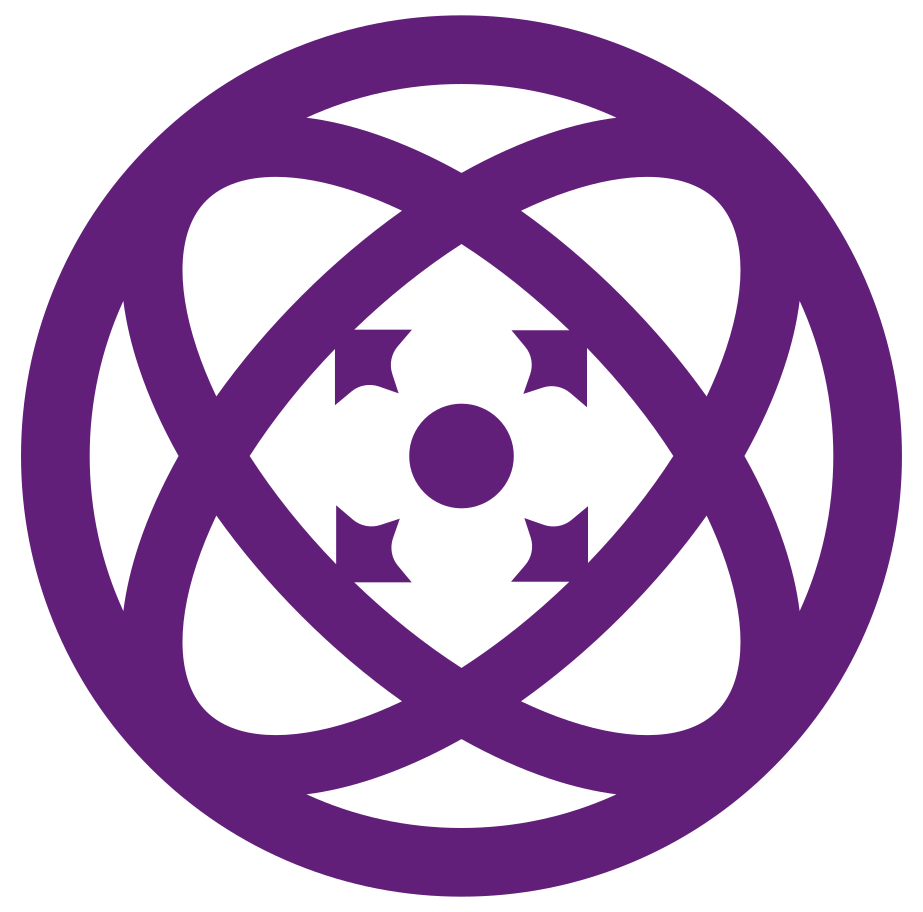
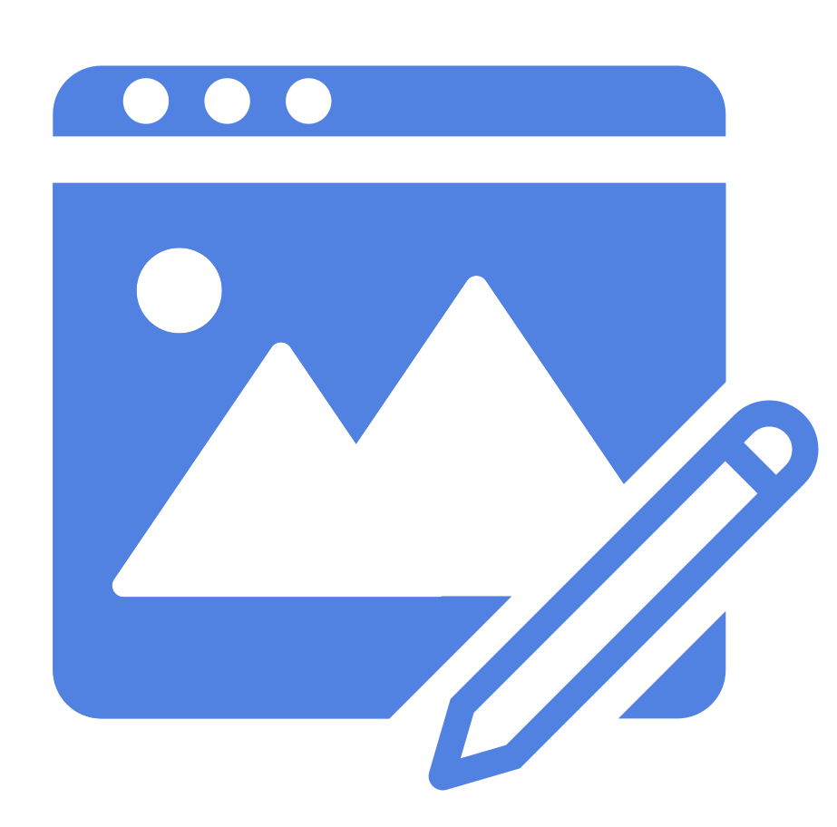

What I'm up to
Antimatter Audio

Brand identity, visual design, UX design, and front end development for a growing audio software company.
Freelance projects

Let me help you bring your ideas to life!
Past work
New Relic
- Led the front end development process for integral features in New Relic's Digital Experience Monitoring suite.
- Collaborated with the product, design and development teams on the design and functionality for a new Session Replay experience, creating reusable UI components that went on to be used widely across the DEM ecosystem.
Simple
- Planned and implemented a UI redesign that led to a 7% increase in new user account funding.
- Collaborated with the design, product, and front end teams to build a shared global design system and library of UI components in React and TypeScript.
Nike
- Collaborated with a team of full stack developers to implement new features and support existing functionality using React, Redux, Node.js, GraphQL, AWS, Enzyme, and Jest.
Metal Toad
- Helped lead and implement a successful refactor effort to create a modern codebase with a global design system and reusable component library.
DAT Solutions
- Worked with the design and development teams to plan and design a unified front end strategy for DAT’s suite of shipping-oriented web applications.
Postano
- Created custom social media event displays using the AngularJS framework.
- Collaborated in the user interface design process, including paper prototyping, sketches and mockups.
- Built out new pages for the marketing site from mockups, working closely with the marketing team.